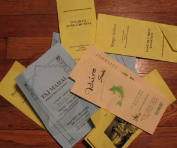

New feature: lobby of tears

Today was a bad day for menus in the lobby, which I always pick up and throw out myself, so I’m carrying out one of my longstanding and outrageously grumpy plans.
The Menu littering hall of shame is a catalog of the worst offenders, the restaurants that dump four or five menus on the floor of our lobby. As if anyone were interested. I’ll be adding to it whenever I get really pissed off at the trash in our lobby.
Welcome to the boycott, suckaz!
Backtalk
Hi mr. no-name, i’m the mastermind of garbage ivan b. (at least i use my name!!. I would like to invite you at my restaurant anytime you want so you’ll have the opportunity to tell ME in my face all your very sarcastic and funny comment about my menu. I kinda think you’ll never show up, because this is the M.O. of you anonimous weasels, complain in the dark and smile like assholes in the light, but if you really wnat to boycott anything you can stand in front of me and call me names…. So long suckerzzz
Ivan, welcome to the world of weblogs! We post under pseudonyms for fun, and because – really – it doesn’t matter who I am. What matters is the trash your delivery boy left all over my lobby.
Besides, you sound like a creep, I’d rather you not know my name and address. If you want to find me out, at least offer a free meal, or lobby cleaning service. Think with your head, “mastermind.”
Doctor weasel, welcome to the real world, where you are responsible for what you say, do or think. Your answer is exactly what i expected, you kept yourself in the shadow where you feel the power that you otherwise don’t have. I didn’t really believe that you would show up, but at least you could have sent me an angry and private mail on my personal e-mail address. Anyway, being told that i’m a creep from somebody who likes to be called “Doctor Barnett” is a little bit of an irony. Still i’m always here at the restaurant, and whenever you feel like straighten this up you know my address (oh yes you do!!) Don’t expect to have a free meal though, you’ll have to earn it first!! Ciao Doc!!!! Ivan “the mastermind” B.
And it’s in this real world that your restaurant is responsible for dropping unwanted menus all over someone’s floor, isn’t it? I don’t just want you to stop trashing my lobby (which is why I’m not chumming up by e-mail), I want you and others to stop trashing the whole damn city.
Yes, I’m an idealist. But at least I got someone riled up.
Seriously, Ivan. When you drop menus on the floor and on the street, you are no better than the $2 dinner special Chinese places that are the pioneers of that practice. Let your restaurant and its reviews speak for themselves, and if you need to get the word out, advertise. Don’t litter. I don’t see menus from Osso Bucco, Patsy’s, or Buona Sera all over the floor in my building. Do you think you’re scoring customers that way?
Ok dudes, i’ll be serious now: I’m not the owner of the place and i’m not very concerned about the bad feedback that your comments can have against the restaurant, but i’m the chef, and whenever you google my name, your blog come out as 4th listing and with the bold “ivan the mastermind of garbage” as snippet. Now, besides the fact that we don’t send ANYBODY to leave menus on ANY lobby or apartment complex, but we merely include a couple of flyers IN the delivery bag, that’s not the point. You posted your insanely rude comments for everybody to see without knowing anything about us and giving for sure the fact that we deliberately trashed your lobby. As i said,i’m not the owner of the place and i don’t have any power over controlling who leaves trash on your place, but i’m directly affected by your posting, so my request for you is, eiher take off your whole posting or at least change the contents so i would not be discriminate against without fault. THEN i would like you to have a complimentary dinner at Borgo so you can make your own opinion about my cuisine!! Respectfully Ivan B.
Understand that from my perspective, it’s “insanely rude” to send out delivery guys with extra menus intended to be dropped in entryways and slipped under doors. Not deliberate? Please.
But since you’ve finally asked nicely, and (as you say) my quarrel isn’t with the kitchen, I’ll remove the jab directed at you. Google will make an adjustment whenever the “pigeons”:http://www.google.com/technology/pigeonrank.html get around to it.
Add a comment